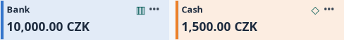
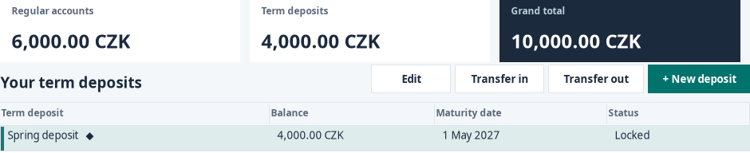
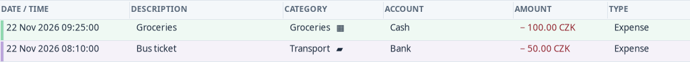
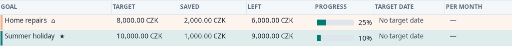

Setting up a budget
Start or update the app
Before updating, open your previous version and choose Settings & backup → Export backup. Keep that JSON, close the app, and extract the entire new ZIP to a new folder. Open BudgetDesk.exe inside BudgetDesk. Leave its configuration file next to it. Your existing budget opens from the same Windows data folder. Old entries keep their dates. A missing historical time stays blank unless you choose to add one.
The six tabs are Accounts & bills, Term deposits, Daily expenses, Monthly overview, Yearly overview and Savings goals. For practice, run Support/Test-Sandbox.cmd. It creates a separate, initially empty budget and keeps it between sessions. Support/Try-Demo.cmd opens a third budget with sample data.
Choose the right window
| What you open | What you will see |
|---|---|
| BudgetDesk.exe | Your normal budget. Upgrading in a new program folder reuses your existing data folder. |
| Support/Test-Sandbox.cmd | A separate budget for practising. It keeps your practice entries between sessions. |
| Support/Try-Demo.cmd | A separate set of sample figures for exploring the six tabs. |
Set your language and theme
Choose your preferences
Open Settings & backup. Under Language choose English, Ελληνικά or Čeština. Under Appearance choose Light or Dark, then select Save. The open budget changes immediately. Your choices are saved with this budget and included in its JSON backup.
You can switch back from the same two fields at the top of Settings. Your account names, payees, descriptions and amounts stay as entered. A paused recurring payment keeps its red card in both themes.
What changes when you press Save
| Setting | Result |
|---|---|
| Language | Menus, buttons, statuses and palette names switch immediately. Names and descriptions you typed keep their spelling. |
| Light or Dark | All six tabs switch together. Selected item colors remain recognizable against the new background. |
| Separate budgets | Set your test budget to a different language or theme to make its window easier to recognize. |
Choose a color for each item
Choose a color while creating or editing
Open a new or existing account, recurring payment, transaction, future expense, savings goal or template. On the Item color row, select the button showing the current color.
Choose one of the 32 swatches. Hover or use the arrow keys to read its name. The check mark shows the current choice. The palette closes after you choose. Select Save in the item form to keep the change.
How colors follow an item
| Item | What happens |
|---|---|
| Account or recurring payment | The card takes a tint and a narrow stripe in the exact color. A paused bill is red. Resume brings back the chosen color. |
| Transaction or future expense | The individual row is tinted. A scheduled payment passes its color to the recorded expense. Editing a schedule affects later payments. |
| Goal or template | Each goal has its own row color. A template suggests its saved color for each new draft, where you can change it. |
The 32 available colors
- Burgundy
- Red
- Coral
- Pink
- Magenta
- Plum
- Violet
- Lavender
- Brown
- Rust
- Orange
- Peach
- Amber
- Yellow
- Olive
- Lime
- Forest
- Green
- Mint
- Teal
- Turquoise
- Cyan
- Sky blue
- Blue
- Navy
- Indigo
- Sand
- White
- Silver
- Gray
- Slate
- Black
Set up accounts and categories
Organize the dashboard
Under Accounts & bills → + Add account, enter a name, icon, currency and opening balance. Use the balance at the start of the selected day, before that day's entries. The opening balance contributes to the account total. The income report starts with recorded income. Click a card to edit it. Drag cards or change Display position to arrange the dashboard.
Under Daily expenses → Categories, add or rename a spending category and optionally give it a monthly budget. Zero leaves the budget unset. You can have 20 accounts, 20 categories and 20 recurring schedules. Names in account, category and icon pickers are alphabetical. The symbol follows its name. Focus a picker and press a letter to jump to the first matching name.
Click a table heading once for ascending order, again for descending order and a third time to return to the original order. Dates and amounts sort chronologically and numerically. Sorting covers all pages. Previous / Next changes the displayed page.

Check a starting balance
| Example | Effect on the account and reports |
|---|---|
| 10,000 CZK at the start of today | The account opens at 10,000 CZK. Recorded income for today is zero. |
| A 300 CZK purchase today | The balance becomes 9,700 CZK and the category shows 300 CZK of spending. |
| A 2,000 CZK salary today | The balance becomes 11,700 CZK. The income report shows 2,000 CZK. |
Manage term deposits
Open or fund a deposit
In Term deposits → + New deposit, enter a name, opening date and maturity date. Pick a funding account and enter the amount going into the deposit. For an existing deposit already held outside your account balances, select Existing deposit balance. This adds its opening amount to your budget.
Use Transfer in to add funds and Transfer out to return part or all of the balance to a regular account. When currencies differ, verify the amounts actually sent and received. The transfer appears once in history.

Try it with 10,000 CZK in your bank
| Action | Bank · deposit · total |
|---|---|
| Fund a new deposit with 4,000 CZK | 6,000 · 4,000 · 10,000 CZK |
| Return 1,500 CZK to the bank | 7,500 · 2,500 · 10,000 CZK |
| Return the remaining 2,500 CZK | 10,000 · 0 · 10,000 CZK |
Record everyday transactions
From receipt to history
Go to Daily expenses → + Expense. Choose the local date and time, payee or description, account, amount and category. Press Save. + Income adds money to the selected account. For Transfer, choose the sending and receiving accounts. For different currencies, enter the amount actually received in the destination currency. A transfer moves money between accounts and is excluded from income and spending totals.
For a receipt covering two categories, enter the full price, open Split purchase, assign each part and choose Use split. The category amounts must add up to the full receipt in its original currency. Saving creates one charge. Use Edit selected to correct the same transaction. Delete removes it and recalculates balances.

One purchase, two categories
| Action | What to check |
|---|---|
| Start with 1,500 CZK in Cash | Add an expense for the entire receipt, 1,000 CZK. Choose Cash as the paying account. |
| Assign 600 and 400 CZK | Choose two categories in Split purchase. The parts add to the full 1,000 before you save. |
| Open Recorded entries | Cash now holds 500 CZK. There is one expense. The monthly category totals show 600 and 400. |
Pay in a different currency
Read the receipt and the account charge
In + Expense, select your CZK bank. The selector beside Amount / currency starts at CZK. For a €20 receipt, enter 20 and choose EUR. Under Conversion, enter 25 if your bank charged 25 CZK for €1. The preview shows 500.00 CZK. Save once. A bank balance of 10,000 CZK becomes 9,500 CZK. The receipt is still recorded as 20 EUR.
The rate means units of account currency for one unit of receipt currency. You can use a suggested rate or enter the rate on your statement. With no rate available, enter one before saving. Settings & backup accepts CZK values for EUR, USD, GBP, CHF and PLN. Reporting currency changes the display. Account balances use current valuations. The transaction keeps its booked conversion and CZK value when rates change. The same receipt-currency choice is available for income, plans and recurring charges.
Two figures to keep apart
| When | What Budget Desk records |
|---|---|
| A 100 EUR account at 25 CZK per EUR | The combined balance includes 2,500 CZK for that account. |
| Spend 10 EUR at that rate | The account has 90 EUR left. This expense contributes 250 CZK to the CZK spending report. |
| Later set the rate to 26 | The same 90 EUR now contributes 2,340 CZK to the combined balance. The earlier expense still contributes 250 CZK. |
Schedule a one-off expense
Book a payment at its due time
Choose Daily expenses → + Future expense. Enter the amount, currency, account, category and local due date and time. Record automatically when due starts enabled for new plans. The plan remains under Future / planned until it is booked. Its status shows Auto or Manual.
The app catches up after the computer wakes or the budget reopens. A budget entry records your payment locally. The bank transfer itself is separate.
Turn automatic recording off to keep a manual reminder. Plans created before version 1.2 keep their manual status. To automate one, edit it, select its due time and enable automatic recording. Saving a past-due automatic plan books it immediately.
For a manual reminder, Due today becomes Overdue today once the time has passed. A date-only reminder stays due all day. After paying, use Record paid. Confirm to use the current time or select the actual payment time. Export plans CSV exports all outstanding plans, including their status.
At 21:14, schedule 900 CZK for 21:15
| When | What you should see |
|---|---|
| 21:14 | Future / planned shows the 900 CZK item. The booked balance and actual monthly spending have not changed. |
| 21:15 with Auto enabled | The plan leaves the list, one 900 CZK expense appears, and the account is debited once. |
| 21:16 after reopening | The automatic expense is present with 21:15 as its time. A further reopening leaves one expense. |
Manage recurring payments
Set the next unpaid occurrence
Under Accounts & bills → + Recurring payment, choose the account, category, amount, next unpaid date and time, and interval. For a quarterly bill, choose 3 Months. A monthly schedule anchored on the 31st uses the last day in shorter months and returns to its anchor when possible.
Status controls whether the schedule is active. An active Manual schedule waits for Record payment. Confirming records one expense at the actual payment time and advances the next occurrence. Automatic recording makes an active schedule Auto. Due occurrences are checked when the budget opens and the app schedules its next check for the next payment deadline. After time away, missed occurrences are booked at their scheduled times. Reopening the app does not post an occurrence twice.
Pause / resume suspends the schedule. Its card turns red with white text and a bold Paused label. It stays red when another payment is selected and after reopening the budget. Resume restores the active colors. Resuming an overdue automatic schedule asks before catching up. To skip dates intentionally, edit the next unpaid date before resuming. Changes to a schedule apply to future occurrences. Hover over its card for the full name, account, interval, status and due time.
Read the status on the card
| Status | What moves the schedule forward |
|---|---|
| Auto | An active schedule records each due occurrence and advances. Unpaid occurrences missed while closed are processed on return. |
| Manual | Record payment after paying. Confirming posts one expense and advances the schedule one occurrence. |
| Paused | The card is red and automatic recording is suspended. Resume restores its own color. Review the next unpaid date before resuming. |
Use templates and payees
Prepare reusable details
Open Daily expenses → Templates → + New. Choose expense or income, name the shortcut and fill in reusable details. With Remember amount off, enter a fresh price each time. A split template keeps its fixed total and category allocation. A foreign-currency template remembers the receipt currency. Review the proposed rate each time you use it.
Use template opens a new draft with the current date and time. Save posts one transaction. Cancel closes the draft. Save as template inside a draft saves the shortcut separately, so it survives cancelling the transaction.
Type a new name in Payee / shop and save. Next time, choosing it in a blank entry suggests its remembered account and category. Your explicit choices and template presets take precedence. In Payees you can edit defaults, rename or delete a profile. Old purchases keep the payee text that was actually recorded.
Pick the shortcut for the job
| Situation | Suggested setup |
|---|---|
| Same shop, variable total | Save a template with Remember amount cleared. Enter the receipt amount each time you use it. |
| Same two-category purchase | Give the template a fixed total and split. Review its amounts, account and color in the draft before saving. |
| Only the shop is usually the same | Choose a saved Payee / shop in a blank entry to suggest its account and category. You can change either. |
Read reports and search history
Trace numbers back to entries
Monthly overview shows the selected month's recorded income, expenses, net and category spending against optional budgets. Net is income minus expenses. Yearly overview shows twelve months. Double-click a month to open its detail. Month and year CSVs include every recorded transaction in the period, including transfers as their own type. Unpaid plans stay in their own export.
In Daily expenses → Search all history, combine text, account, category, type, inclusive date range and full amount. The amount filter uses the full number on the receipt in its original currency. A category filter counts only that category's share of a split. Reset filters restores all history. Edit the selected result or use Export results CSV for every match across all pages. Exports distinguish receipt amount, account amount, currency, rate, recorded time and scheduled time where applicable.
What belongs in each report
| Record | Effect on actual income and expenses |
|---|---|
| Salary of 2,000 CZK and a 1,000 CZK split purchase | Income 2,000, spending 1,000, net +1,000 CZK. The two category shares together make up the one expense. |
| Transfer 500 CZK from Bank to Cash | Each account balance changes. Income, spending and net keep the same totals. |
| A future expense still awaiting payment | It is visible in the plans view and plans CSV. It enters the actual reports when recorded. |
Track a savings goal
Set a target and update progress
Under Savings goals → + New goal, enter the target, currency, amount already saved and optional deadline. Add savings updates progress. For a goal of 10,000 CZK, recording 1,000 shows 10% and 9,000 CZK remaining. If you also move money between bank accounts, record that separately using Transfer.

An example goal of 10,000 CZK
| Action | Progress and remaining amount |
|---|---|
| Create a goal with zero saved | 0% saved and 10,000 CZK remaining. Pick a color to find its row. |
| Choose Add savings and enter 1,000 CZK | 10% saved and 9,000 CZK remaining. The account balances keep their previous values. |
| Raise Saved so far to 2,500 CZK in Edit | 25% saved and 7,500 CZK remaining. Use this field for a correction or withdrawal from the allocation. |
Back up, restore and troubleshoot
Keep or recover a budget
Changes are saved on this PC. Settings & backup → Open data folder opens the current budget folder. The usual budget is in %LOCALAPPDATA%\BudgetDesk\Data. Its Backups folder keeps up to 20 earlier saves. Export backup produces a full JSON copy, including accounts, transactions, schedules, templates, payees and goals. CSV is for reading or analysis.
Restore backup validates the selected JSON and asks before replacing the open budget. Later entries are rolled back. Restore a test backup in the sandbox window if you want to rehearse. Two windows cannot open the same budget at once. If startup fails, close any other copy and try Support/Start-BudgetDesk.cmd for diagnostics. If the data file cannot be read, the recovery dialog can open an earlier JSON backup.
Choose the right file
| You want to… | Use |
|---|---|
| Restore a full budget later | Export backup (JSON). It includes the item colors, language, theme, balances, plans, goals, templates and payees. |
| Analyze entries in a spreadsheet | Export a monthly, annual, history or plans CSV. Pick the view covering the entries you need. |
| Recover an earlier local save | Open the active data folder and check its Backups subfolder. Confirm the date and which budget the copy belongs to. |